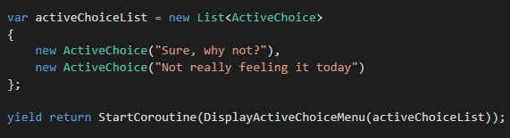
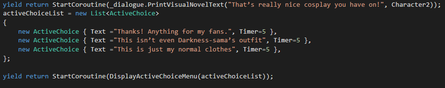
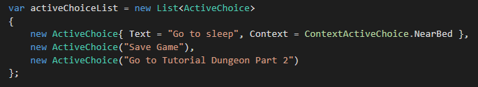
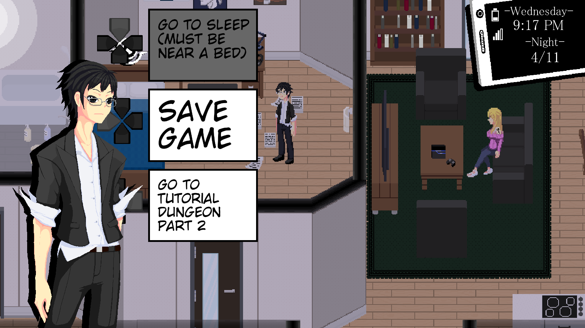

Rainfall: Active Choice
Rainfall’s scenes are designed to be active in nature. Instead of approaching dialogue options from the perspective of navigating a tree structure, the goal is for the player to explore the dialogue by moving and interacting with objects and persons in the scene.
To support this we’ve incorporated the ability for the player to move and interact with other objects and people during any conversation, as well as creating the Active Choice System, a new way of organizing and presenting the information a player collects in-game. The typical structure of a dialogue choice in our game looks like this:
This is the starting point in a scenario where we need to display dialogue options. We start with the traditional list of choices, and then utilize a list of augments to enhance and change these choices: Rumors, Timers, Context, and Skills.
Rumor Choices are special dialogue options that only appear after the player has completed specific activities, like listening to certain conversations or completing investigations. The knowledge gained from these activities, known as "Rumors", becomes a part of a persistent collection they can use to unlock new object interactions and dialogue.
Timer Choices incorporate a countdown, becoming unavailable after a set amount of times passes, differing based on the nature of the response within the game world. Should all options consist of Timer Choices the player can give an "Ignore" response by waiting for all countdowns to end. For example, consider the situation in which a waitress asks the player what they would like to order. What the player can order is displayed with Timer Choices, and should the player not make any choices for the duration of these countdowns it will create an awkward environment between them and the waitress. This will prompt the waitress to come back later and worsen her perception of the player.
Context Choices are options that only become available when the player is near certain objects or people in a scene. With Lockon Acknowledge representing the player’s focus on a target certain factors like distance can no longer be abstracted within the game. If the player locks-on to a door it's jarring to open it from across the room.
Any combination of these augments can be used to enhance the base active choice system in order to craft more interesting scenarios. Each active choice utilizing these augments will provide info on unfulfilled conditions, serving as guideposts through the scene to ensure smooth exploration for the player. This molds active choice to provide a continuous path forward to the player, driving a Choose Your Own Adventure novel that unfolds in real time around them, placing weight on both their actions as well as the lesser explored paths like their inaction.
Something simple like approaching a group of students at night goes from a simple list to a dynamic, multi-layered exploration. Should the player wish to speak with them, they must reach the group within 5 seconds before they become uncomfortable and leave. Should they wish to intimidate them, the player will needed to have collected the Rumor on their school. What would normally would just be a single passive choice has become a proactive situation with multiple outcomes, demonstrating the power of the Active Choice System.
